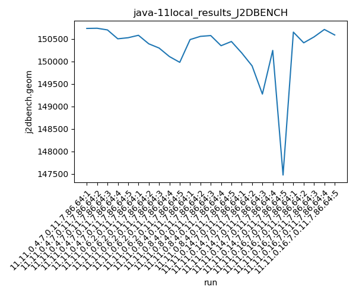
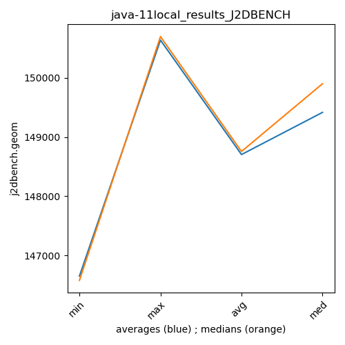

java-11 J2DBENCH
Context at bottom
/home/jvanek/git/benchmarks-in-nested-virtualisation-toolchain/final_results/local_results/local_results_JMH
java-11
J2DBENCH
/home/jvanek/git/benchmarks-in-nested-virtualisation-toolchain/final_results/local_results/local_results_J2DBENCH
java-11
J2DBENCH
local_results_J2DBENCH
final score
Expected number of java-11 JDKs: 7
1st avgmed_alljdks_metric:
/home/jvanek/git/benchmarks-in-nested-virtualisation-toolchain/final_results/result_processing.py /home/jvanek/git/benchmarks-in-nested-virtualisation-toolchain/final_results/local_results/local_results_J2DBENCH j2dbench.geom False
values: [150730, 150734, 150697, 150500, 150524, 150578, 150389, 150295, 150106, 149978, 150483, 150554, 150572, 150347, 150440, 150186, 149900, 149274, 150242, 147478, 150648, 150411, 150542, 150707, 150585]

Expected number of iterations: 5
final number of values: 25 out of 35
Pass rate: 71.4%
values: (147478, 150734, 150276.0, 150483)

** accuracy from all jdks and runs
more is better
MIN: 147478
MAX: 150734
AVG: 150276.0
MED: 150483
Relative differences 1:
MIN-MAX: 2.0 %
MIN-AVG: 2.0 %
MIN-MED: 2.0 %
MAX-MIN: -2.0 %
MAX-AVG: -0.0 %
MAX-MED: -0.0 %
AVG-MED: 0.0 %
stored to java-11.properties. sort | uniq that!
2nd avgmed_by_jdk_metric:
values: [150637.0, 150269.2, 150479.2, 149416.0, 150578.6]

values: [150697, 150295, 150483, 149900, 150585]

values: (149416.0, 150637.0, 150276.0, 150479.2)
values: (149900, 150697, 150392.0, 150483)

** accuracy from all jdks where runs were avged
more is better
MIN: 149416.0
MAX: 150637.0
AVG: 150276.0
MED: 150479.2
Relative differences 1:
MIN-MAX: 1.0 %
MIN-AVG: 1.0 %
MIN-MED: 1.0 %
MAX-MIN: -1.0 %
MAX-AVG: -0.0 %
MAX-MED: -0.0 %
AVG-MED: 0.0 %
stored to java-11.properties. sort | uniq that!
** accuracy from all jdks where runs were medianed
more is better
MIN: 149900
MAX: 150697
AVG: 150392.0
MED: 150483
Relative differences 1:
MIN-MAX: 1.0 %
MIN-AVG: 0.0 %
MIN-MED: 0.0 %
MAX-MIN: -1.0 %
MAX-AVG: -0.0 %
MAX-MED: -0.0 %
AVG-MED: 0.0 %
stored to java-11.properties. sort | uniq that!
/home/jvanek/git/benchmarks-in-nested-virtualisation-toolchain/final_results/local_results/local_results_RADARGUNs1
java-11
J2DBENCH
/home/jvanek/git/benchmarks-in-nested-virtualisation-toolchain/final_results/local_results/local_results_RADARGUNs3
java-11
J2DBENCH
/home/jvanek/git/benchmarks-in-nested-virtualisation-toolchain/final_results/local_results/local_results_SPECJBB
java-11
J2DBENCH
/home/jvanek/git/benchmarks-in-nested-virtualisation-toolchain/final_results/local_results/local_results_DACAPO
java-11
J2DBENCH
pass rates:
local_results_J2DBENCH=71.4%
Context:
- local_results
- J2DBENCH